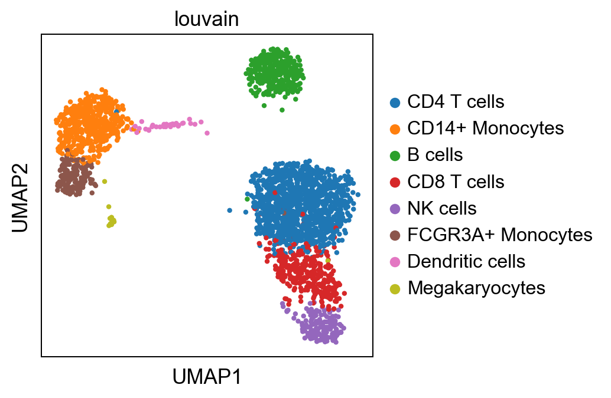
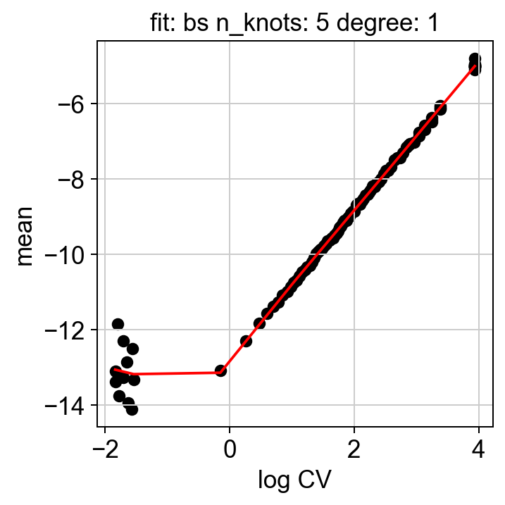
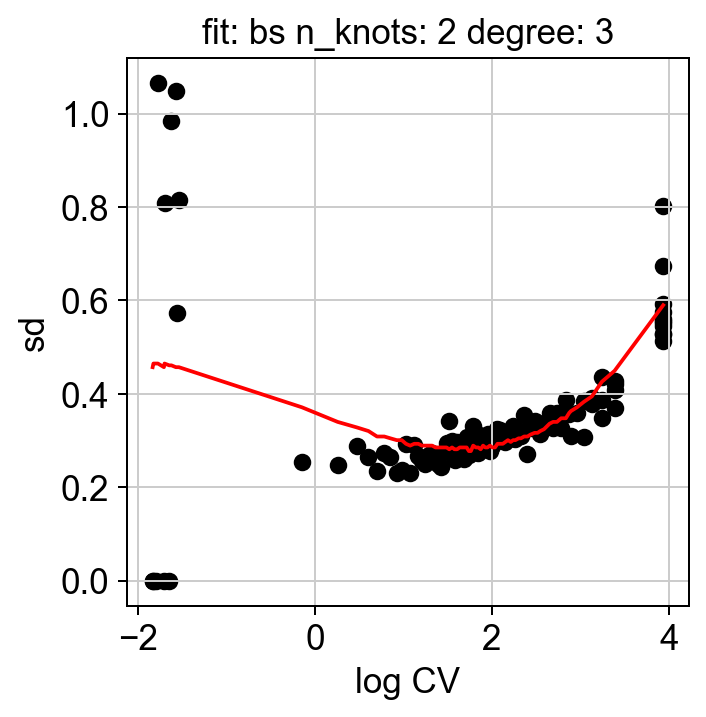
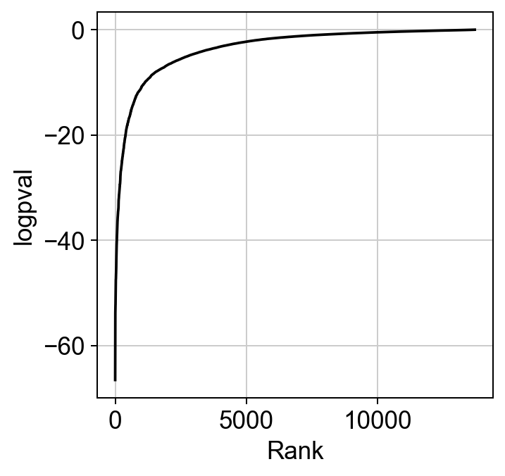
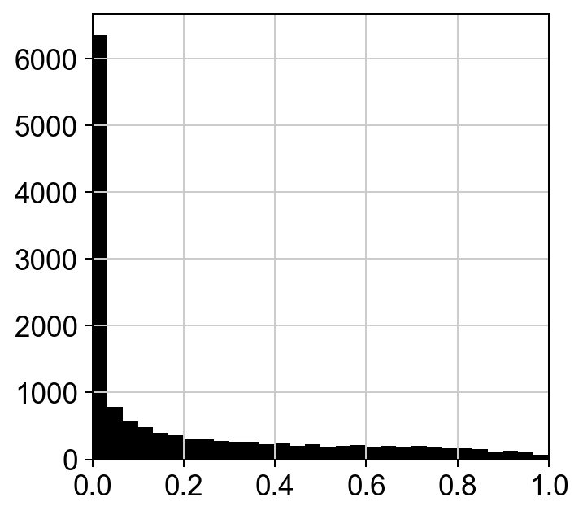
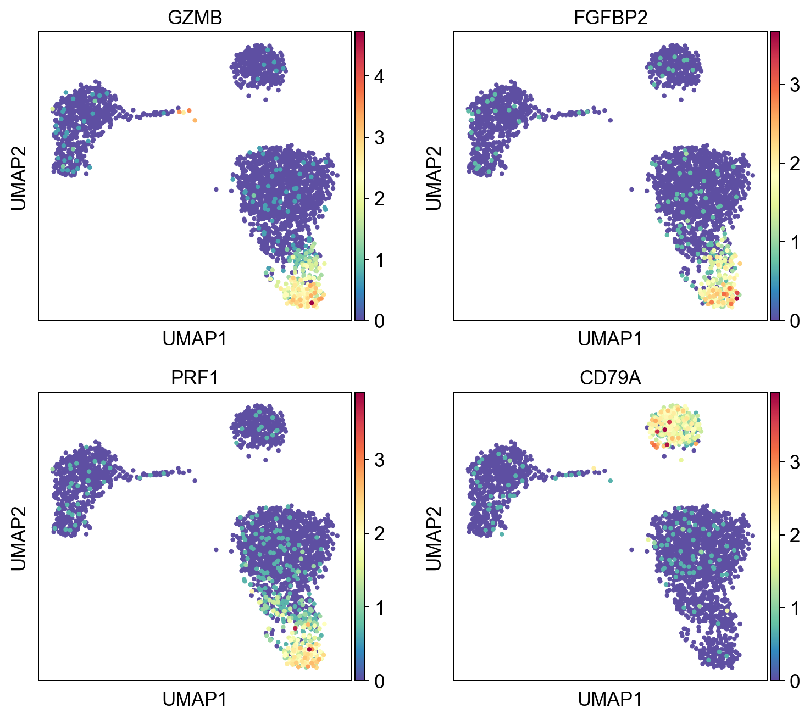
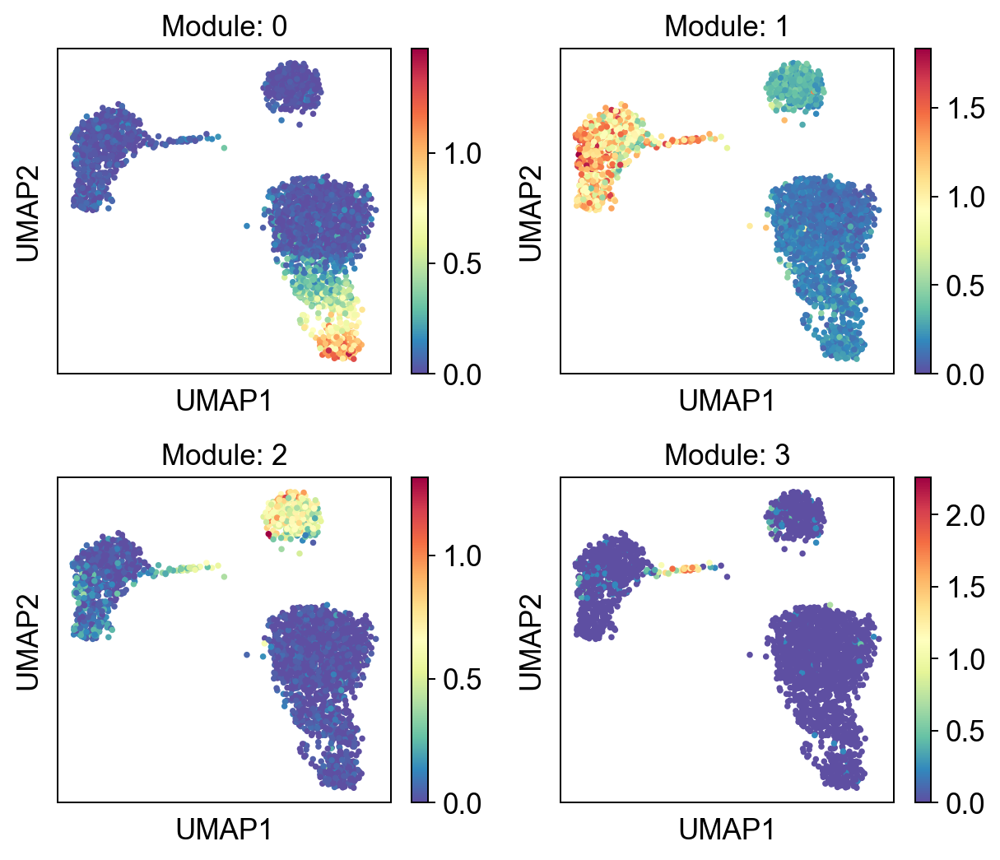
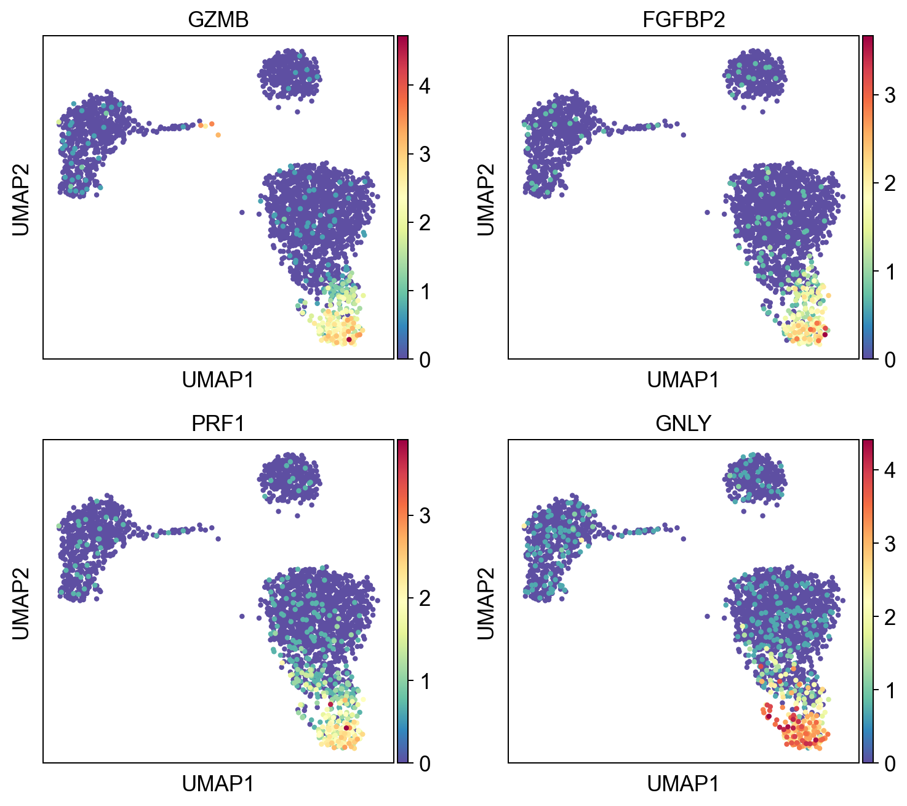

Single Cell Transcriptomics (PBMC3k)#
[1]:
import scanpy as sc
import singleCellHaystack as hs
sc.set_figure_params(facecolor="white", dpi=90)
Load data#
We load the human PBMC data available from scanpy.
[2]:
adata = sc.datasets.pbmc3k_processed()
adata
[2]:
AnnData object with n_obs × n_vars = 2638 × 1838
obs: 'n_genes', 'percent_mito', 'n_counts', 'louvain'
var: 'n_cells'
uns: 'draw_graph', 'louvain', 'louvain_colors', 'neighbors', 'pca', 'rank_genes_groups'
obsm: 'X_pca', 'X_tsne', 'X_umap', 'X_draw_graph_fr'
varm: 'PCs'
obsp: 'distances', 'connectivities'
[3]:
sc.pl.umap(adata, color="louvain")
/Users/diez/miniconda3/envs/singleCellHaystack/lib/python3.10/site-packages/scanpy/plotting/_tools/scatterplots.py:392: UserWarning: No data for colormapping provided via 'c'. Parameters 'cmap' will be ignored
cax = scatter(

Filter some cells#
We remove Megakaryocytes since they are not interesting in this example and they will drive the top results.
[4]:
mega = adata.obs.louvain.isin(["Megakaryocytes"])
mega.value_counts()
[4]:
False 2623
True 15
Name: louvain, dtype: int64
[5]:
adata = adata[~mega, :]
adata
[5]:
View of AnnData object with n_obs × n_vars = 2623 × 1838
obs: 'n_genes', 'percent_mito', 'n_counts', 'louvain'
var: 'n_cells'
uns: 'draw_graph', 'louvain', 'louvain_colors', 'neighbors', 'pca', 'rank_genes_groups'
obsm: 'X_pca', 'X_tsne', 'X_umap', 'X_draw_graph_fr'
varm: 'PCs'
obsp: 'distances', 'connectivities'
Run haystack#
We run haystack using PCA coordinates and otherwise default parameters. Since the data has been scaled, we need to pass the raw data to avoid negative numbers. Also this will allow haystack to run on all the genes, not only those to calculate the PCA coordinates.
[6]:
res = hs.haystack(adata.raw.to_adata(), coord="pca")
> starting haystack ...
> entering array method ...
> scaling coordinates ...
> calculating feature stds ...
> removing 6 genes with zero variance ...
> calculating grid points ...
> calculating distance to cells ...
> calculating densities ...
> calculating Q dist ...
> calculating KLD for 13708 features ...
100%|██████████| 13708/13708 [00:02<00:00, 6130.26it/s]
> calculating feature's CV ...
> selecting genes to randomize ...
> calculating randomized KLD ...
100%|██████████| 100/100 [00:02<00:00, 40.36it/s]
> calculating P values ...
> done.
Check some QC plots#
We can examine some of the QC plots. First the randomization fits. These are used to calculate KLD from randomized expression levels for a subset of genes, in order to estimate the values to the entire gene set.
[7]:
hs.plot_rand_fit(res, "mean")
hs.plot_rand_fit(res, "sd")


The ranking of logpval and distribution of pval gives us some idea of how many significant genes we can detect.
[8]:
hs.plot_pval_rank(res)
hs.plot_pval_hist(res)


Visualizing the results#
A pandas DataFrame with the results can be obtained. By default the results are sorted by logpval_adj.
[9]:
sum = res.top_features(n=10)
sum
[9]:
| gene | KLD | pval | pval_adj | logpval | logpval_adj | |
|---|---|---|---|---|---|---|
| 9290 | GZMB | 0.004207 | 2.671463e-67 | 3.662041e-63 | -66.573251 | -62.436277 |
| 3200 | FGFBP2 | 0.003713 | 2.990241e-63 | 4.099023e-59 | -62.524294 | -58.387320 |
| 7149 | PRF1 | 0.002337 | 2.624538e-57 | 3.597716e-53 | -56.580947 | -52.443973 |
| 12799 | CD79A | 0.002090 | 1.626349e-56 | 2.229399e-52 | -55.788786 | -51.651812 |
| 1802 | GNLY | 0.002155 | 3.416672e-56 | 4.683574e-52 | -55.466397 | -51.329423 |
| ... | ... | ... | ... | ... | ... | ... |
| 13172 | A1BG-AS1 | 0.000098 | 9.969061e-01 | 1.000000e+00 | -0.001346 | 0.000000 |
| 344 | SYNC | 0.000088 | 9.974878e-01 | 1.000000e+00 | -0.001092 | 0.000000 |
| 1731 | PCYOX1 | 0.000065 | 9.980668e-01 | 1.000000e+00 | -0.000840 | 0.000000 |
| 13247 | CRKL | 0.000038 | 9.988439e-01 | 1.000000e+00 | -0.000502 | 0.000000 |
| 9925 | STOML1 | 0.000099 | 9.989249e-01 | 1.000000e+00 | -0.000467 | 0.000000 |
13708 rows × 6 columns
[10]:
sc.pl.umap(adata, color=sum.gene.iloc[:4], ncols=2, cmap="Spectral_r")

Clustering results into gene modules#
We can cluster the results using K-means. We need to pass the AnnData object, the haystack results and the number of clusters.
[11]:
gene_mods = hs.cluster_genes(adata.raw.to_adata(), res, n_clusters=4, random_state=1)
gene_mods.sort_values("cluster").groupby("cluster").head(3)
[11]:
| gene | cluster | |
|---|---|---|
| 0 | GZMB | 0 |
| 48 | CCL5 | 0 |
| 46 | CTSW | 0 |
| 63 | CEBPD | 1 |
| 64 | SPI1 | 1 |
| 71 | NCF2 | 1 |
| 3 | CD79A | 2 |
| 96 | PKIG | 2 |
| 11 | HLA-DQA1 | 2 |
| 61 | CD1C | 3 |
| 6 | FCER1A | 3 |
| 20 | CLEC10A | 3 |
[12]:
hs.plot_gene_clusters(adata.raw.to_adata(), gene_mods, basis="umap", ncols=2, figsize=[7, 6], color_map="Spectral_r")

Check some of the genes in Module 0.
[13]:
mod0 = gene_mods.groupby("cluster").get_group(0)
mod0.head(4)
[13]:
| gene | cluster | |
|---|---|---|
| 0 | GZMB | 0 |
| 1 | FGFBP2 | 0 |
| 2 | PRF1 | 0 |
| 4 | GNLY | 0 |
[14]:
sc.pl.umap(adata, color=mod0.gene.iloc[:4], cmap="Spectral_r", ncols=2)

Export results#
[15]:
#sum.to_csv("pbmc3k-results.tsv")